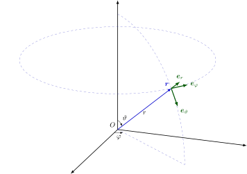

Ký hiệu toán học
Bài viết này quy định cách viết khuyến nghị cho các ký hiệu toán học trong OI Wiki và cung cấp một số ví dụ ứng dụng.
Tài liệu này tham khảo GB/T 3102.11-1993, ISO 80000-2:2019 và bảng ký hiệu sửa đổi từ sách "Concrete Mathematics", do đó về cơ bản tương thích với hệ ký hiệu trong giáo trình phổ biến trong nước và các ký hiệu quen dùng trong lập trình thi đấu OI.
Cách viết LaTeX cho các ký hiệu, vui lòng tham khảo mã nguồn của bài này
Logic toán học
| Số hiệu | Ký hiệu, biểu thức | Ý nghĩa, diễn giải tương đương | Ghi chú & ví dụ |
|---|---|---|---|
| n1.1 | \(p \land q\) | Phép hội của \(p\) và \(q\) | \(p\) và \(q\). |
| n1.2 | \(p \lor q\) | Phép tuyển của \(p\) và \(q\) | \(p\) hoặc \(q\); Ở đây "hoặc" là hoặc bao hàm, tức là chỉ cần \(p\) hoặc \(q\) đúng thì \(p \lor q\) đúng. |
| n1.3 | \(\lnot p\) | Phủ định của \(p\) | Không \(p\). |
| n1.4 | \(p \implies q\) | \(p\) kéo theo \(q\); Nếu \(p\) đúng thì \(q\) đúng |
\(q \impliedby p\) tương đương với \(p \implies q\). |
| n1.5 | \(p \iff q\) | \(p\) tương đương \(q\) | \((p \implies q) \land (q \implies p)\) tương đương với \(p \iff q\). |
| n1.6 | \((\forall~x \in A)~~p(x)\) | Với mọi \(x\) thuộc \(A\), mệnh đề \(p(x)\) đều đúng | Nếu ngữ cảnh đã rõ \(A\), có thể viết \((\forall~x)~~p(x)\). \(\forall\) gọi là lượng từ toàn bộ. Ý nghĩa của \(x \in A\) xem n2.1. |
| n1.7 | \((\exists~x \in A)~~p(x)\) | Tồn tại \(x\) thuộc \(A\) sao cho \(p(x)\) đúng | Nếu ngữ cảnh đã rõ \(A\), có thể viết \((\exists~x)~~p(x)\). \(\exists\) gọi là lượng từ tồn tại. Ý nghĩa của \(x \in A\) xem n2.1. \((\exists!~x)~~p(x)\) (lượng từ tồn tại duy nhất) nghĩa là chỉ có duy nhất một \(x\) sao cho \(p(x)\) đúng. \(\exists!\) cũng có thể viết là \(\exists^1\). |
Tập hợp
| Số hiệu | Ký hiệu, biểu thức | Ý nghĩa, diễn giải tương đương | Ghi chú & ví dụ |
|---|---|---|---|
| n2.1 | \(x \in A\) | \(x\) thuộc \(A\) là một phần tử của tập \(A\) | \(A \ni x\) và \(x \in A\) có nghĩa tương đương. |
| n2.2 | \(y \notin A\) | \(y\) không thuộc \(A\) là một phần tử của tập \(A\) | |
| n2.3 | \(\{x_1, x_2, \dots, x_n\}\) | Tập hợp chứa các phần tử \(x_1, x_2, \dots, x_n\) | Cũng có thể viết là \(\{x_i ~\vert~ i \in I\}\), trong đó \(I\) là tập chỉ số. |
| n2.4 | \(\{x \in A ~\vert~ p(x)\}\) | Tập hợp gồm tất cả các phần tử \(x\) thuộc \(A\) sao cho \(p(x)\) đúng | Ví dụ: \(\{x \in \textbf{R} ~\vert~ x \geq 5\}\); Nếu từ ngữ cảnh có thể biết được đang xét là tập nào, có thể sử dụng ký hiệu \(\{x ~\vert~ p(x)\}\) (ví dụ: khi chỉ xét tập số thực thì có thể sử dụng \(\{x ~\vert~ x \geq 5\}\)). \(\vert\) cũng có thể sử dụng dấu phẩy thay thế, như \(\{x \in A : p(x)\}\). |
| n2.5 | \(\operatorname{card} A\); \(\vert A\vert\); \(\# A\) |
\(A\) có bao nhiêu phần tử, \(A\) có bao nhiêu phần tử | |
| n2.6 | \(\varnothing\) | Tập rỗng | Không nên sử dụng \(\emptyset\). |
| n2.7 | \(B \subseteq A\) | \(B\) chứa trong \(A\) là một tập con của \(A\) | \(B\) có mỗi phần tử đều thuộc \(A\). \(\subset\) cũng có thể dùng cho ý nghĩa này, nhưng xem n2.8 để hiểu rõ hơn. \(A \supseteq B\) và \(B \subseteq A\) có nghĩa tương đương. |
| n2.8 | \(B \subset A\) | \(B\) thực sự chứa trong \(A\) là một tập con thực sự của \(A\) | \(B\) có mỗi phần tử đều thuộc \(A\), và \(A\) có ít nhất một phần tử không thuộc \(B\). Nếu \(\subset\) có nghĩa theo n2.7, thì n2.8 tương ứng với ký hiệu \(\subsetneq\). \(A \supset B\) và \(B \subset A\) có nghĩa tương đương. |
| n2.9 | \(A \cup B\) | \(A\) và \(B\) có thể hợp thành một tập hợp | \(A \cup B := \{x ~\vert~ x \in A \lor x \in B\}\); \(:=\) là định nghĩa, xem n4.3. |
| n2.10 | \(A \cap B\) | \(A\) và \(B\) có thể hợp thành một tập hợp | \(A \cap B := \{x ~\vert~ x \in A \land x \in B\}\); \(:=\) là định nghĩa, xem n4.3. |
| n2.11 | \(\displaystyle \bigcup\limits_{i=1}^n A_i\) | Tập hợp \(A_1, A_2, \dots, A_n\) có thể hợp thành một tập hợp | \(\displaystyle \bigcup\limits_{i=1}^n A_i=A_1\cup A_2\cup \dots \cup A_n\); Cũng có thể sử dụng \(\displaystyle \bigcup\nolimits_{i=1}^n\),\(\displaystyle \bigcup\limits_{i\in I}\),\(\displaystyle \bigcup\nolimits_{i\in I}\), trong đó \(I\) là tập chỉ số. Phải thêm điều kiện để sử dụng \(\displaystyle \bigcup_{P(i)} A_i\) biểu diễn tất cả các \(i\) sao cho \(P(i)\) đúng. |
| n2.12 | \(\displaystyle \bigcap\limits_{i=1}^n A_i\) | Tập hợp \(A_1, A_2, \dots, A_n\) có thể hợp thành một tập hợp | \(\displaystyle \bigcap\limits_{i=1}^n A_i=A_1\cap A_2\cap \dots \cap A_n\); Cũng có thể sử dụng \(\displaystyle \bigcap\nolimits_{i=1}^n\),\(\displaystyle \bigcap\limits_{i\in I}\),\(\displaystyle \bigcap\nolimits_{i\in I}\), trong đó \(I\) là tập chỉ số. Phải thêm điều kiện để sử dụng \(\displaystyle \bigcap_{P(i)} A_i\) biểu diễn tất cả các \(i\) sao cho \(P(i)\) đúng. |
| n2.13 | \(A \setminus B\) | \(A\) và \(B\) có thể hợp thành một tập hợp | \(A \setminus B = \{x ~\vert~ x \in A \land x \notin B\}\); Không nên sử dụng \(A - B\); Khi \(B\) là một tập con của \(A\) thì có thể sử dụng \(\complement_A B\), nếu từ ngữ cảnh có thể biết được đang xét là tập nào, thì \(A\) có thể bỏ qua. Không gây hiểu nhầm thì có thể sử dụng \(\overline{B}\) để biểu diễn tập hợp \(B\) của một tập hợp nào đó. |
| n2.14 | \((a, b)\) | Cặp số có thứ tự \(a\),\(b\); Cặp số có thứ tự \(a\),\(b\) |
\((a, b) = (c, d)\) khi và chỉ khi \(a = c\) và \(b = d\). |
| n2.15 | \((a_1, a_2, \dots, a_n)\) | Cặp số có thứ tự \(n\) | Tham khảo n2.14. |
| n2.16 | \(A \times B\) | Tập hợp \(A\) và \(B\) có thể hợp thành một tập hợp | \(A \times B = \{(x, y) ~\vert~ x \in A \land y \in B\}\). |
| n2.17 | \(\displaystyle \prod\limits_{i=1}^{n} A_i\) | Tập hợp \(A_1, A_2, \dots, A_n\) có thể hợp thành một tập hợp | \(\displaystyle \prod\limits_{i=1}^{n} A_i=\{(x_1, x_2, \dots, x_n) ~\vert~ x_1 \in A_1, x_2 \in A_2, \dots, x_n \in A_n\}\); \(A \times A \times \dots \times A\) được viết là \(A^n\), trong đó \(n\) là số lượng nhân tử. Đây là một cách sử dụng khác của ký hiệu này. |
| n2.18 | \(\mathrm{id}_A\) | Tập hợp \(A\times A\) có thể hợp thành một tập hợp | \(\mathrm{id}_A=\{(x, x)~\vert~x\in A\}\); Nếu từ ngữ cảnh có thể biết được đang xét là tập nào, thì \(A\) có thể bỏ qua. |
| n2.19 | \(\mathbf{1}_A\) | Hàm chỉ thị | \(\mathbf{1}_A(a)=[a\in A]\),\([\cdot]\) được định nghĩa ở n6.24. |
| n2.20 | \(\mathcal{P}(A)\); \(2^A\) |
Tập hợp các tập con của \(A\) | \(\mathcal{P}(A)=\{S:S\subseteq A\}\) |
Các tập số và khoảng
Quan hệ
| Số hiệu | Ký hiệu, biểu thức | Ý nghĩa, diễn giải tương đương | Ghi chú & ví dụ |
|---|---|---|---|
| n4.1 | \(a = b\) | \(a\) bằng \(b\) | \(\equiv\) dùng để nhấn mạnh một đẳng thức là đẳng thức Đây là một nghĩa khác của ký hiệu n4.18. |
| n4.2 | \(a \ne b\) | \(a\) không bằng \(b\) | |
| n4.3 | \(a := b\) | \(a\) được định nghĩa là \(b\) | Tham khảo n2.9, n2.10 |
| n4.4 | \(a \approx b\) | \(a\) gần bằng \(b\) | Không loại trừ bằng nhau. |
| n4.5 | \(a \simeq b\) | \(a\) dần bằng \(b\) | Ví dụ: Khi \(x\to a\) thì \(\dfrac{1}{\sin(x-a)} \simeq \dfrac{1}{x-a}\); \(x \to a\) có nghĩa là [n4.15]. |
| n4.6 | \(a \propto b\) | \(a\) và \(b\) thành tỷ lệ | Cũng có thể sử dụng \(a \sim b\). \(\sim\) cũng được dùng để biểu diễn quan hệ tương đương. |
| n4.7 | \(M \cong N\) | \(M\) và \(N\) toàn đẳng | Khi \(M\) và \(N\) là các tập điểm (hình học). Đây là một nghĩa khác của ký hiệu [n4.18]. |
| n4.8 | \(a < b\) | \(a\) nhỏ hơn \(b\) | |
| n4.9 | \(b > a\) | \(b\) lớn hơn \(a\) | |
| n4.10 | \(a \leq b\) | \(a\) nhỏ hơn hoặc bằng \(b\) | |
| n4.11 | \(b \geq a\) | \(b\) lớn hơn hoặc bằng \(a\) | |
| n4.12 | \(a \ll b\) | \(a\) rất nhỏ hơn \(b\) | |
| n4.13 | \(b \gg a\) | \(b\) rất lớn hơn \(a\) | |
| n4.14 | \(\infty\) | Vô cùng | Đây là một ký hiệu không là một số. Cũng có thể sử dụng \(+\infty\),\(-\infty\). |
| n4.15 | \(x \to a\) | \(x\) tiến gần \(a\) | Thường xuất hiện trong biểu thức giới hạn. \(a\) cũng có thể là \(\infty\),\(+\infty\),\(-\infty\). |
| n4.16 | \(m \mid n\) | \(m\) chia hết \(n\) | Với các số nguyên \(m\),\(n\): \((\exists~k \in \mathbf{Z})~~m\cdot k = n\). |
| n4.17 | \(m \perp n\) | \(m\) và \(n\) nguyên tố cùng nhau | Với các số nguyên \(m\),\(n\): \((\nexists~k \in \mathbf{Z}_{>1})~~(k \mid m) \land (k \mid n)\); Đây là một nghĩa khác của ký hiệu n5.2 |
| n4.18 | \(n \equiv k \pmod m\) | \(n\) modulo \(m\) với \(k\) cùng dư | Với các số nguyên \(n\),\(k\),\(m\): \(m \mid (n - k)\); Không nên nhầm lẫn với n4.1. |
Hình học sơ cấp
| Số hiệu | Ký hiệu, biểu thức | Ý nghĩa, diễn giải tương đương | Ghi chú & ví dụ |
|---|---|---|---|
| n5.1 | \(\parallel\) | Song song | |
| n5.2 | \(\perp\) | Vuông góc | Đây là một nghĩa khác của n4.17 |
| n5.3 | \(\angle\) | (Phẳng) góc | |
| n5.4 | \(\overline{\mathrm{AB}}\) | Đoạn thẳng \(\mathrm{AB}\) | |
| n5.5 | \(\overrightarrow{\mathrm{AB}}\) | Có hướng đoạn thẳng \(\mathrm{AB}\) | |
| n5.6 | \(d(\mathrm{A}, \mathrm{B})\) | Khoảng cách giữa điểm \(\mathrm{A}\) và \(\mathrm{B}\) | Câu hỏi: \(\overline{\mathrm{AB}}\) có độ dài bao nhiêu? |
| n5.7 | \(\triangle\) | Tam giác |
Toán tử
| Số hiệu | Ký hiệu, biểu thức | Ý nghĩa, diễn giải tương đương | Ghi chú & ví dụ |
|---|---|---|---|
| n6.1 | \(a + b\) | \(a\) cộng \(b\) | |
| n6.2 | \(a - b\) | \(a\) trừ \(b\) | |
| n6.3 | \(a \pm b\) | \(a\) cộng hoặc trừ \(b\) | |
| n6.4 | \(a \mp b\) | \(a\) trừ hoặc cộng \(b\) | \(-(a \pm b) = -a \mp b\). |
| n6.5 | \(a \cdot b\); \(a \times b\); \(ab\) |
\(a\) nhân \(b\) | Nếu xuất hiện dấu chấm thì nên chỉ sử dụng \(\times\); Phần ví dụ tham khảo n2.16, n2.17, n14.11, n14.12 |
| n6.6 | \(\dfrac{a}{b}\); \(a/b\); \(a:b\) |
\(a\) chia cho \(b\) | \(\dfrac{a}{b}=a\cdot b^{-1}\); Được sử dụng \(:\) để biểu diễn tỷ lệ giữa các giá trị cùng đơn vị. Không nên sử dụng \(÷\). |
| n6.7 | \(\displaystyle \sum\limits_{i=1}^n a_i\) | \(a_1 + a_2 + \dots + a_n\) | Cũng có thể sử dụng \(\displaystyle \sum\nolimits_{i=1}^n a_i\),\(\displaystyle \sum\limits_i a_i\),\(\displaystyle \sum\nolimits_i a_i\),\(\displaystyle \sum a_i\)； Để sử dụng \(\displaystyle \sum_{P(i)} a_i\) biểu diễn tất cả các \(i\) sao cho \(P(i)\) đúng. |
| n6.8 | \(\displaystyle \prod\limits_{i=1}^n a_i\) | \(a_1 \cdot a_2 \cdot \dots \cdot a_n\) | Cũng có thể sử dụng \(\displaystyle \prod\nolimits_{i=1}^n a_i\),\(\displaystyle \prod\limits_i a_i\),\(\displaystyle \prod\nolimits_i a_i\),\(\displaystyle \prod a_i\)； Để sử dụng \(\displaystyle \prod_{P(i)} a_i\) biểu diễn tất cả các \(i\) sao cho \(P(i)\) đúng. Đây là một cách sử dụng khác của ký hiệu này. |
| n6.9 | \(a^p\) | \(a\) mũ \(p\) | |
| n6.10 | \(a^{1/2}\); \(\sqrt{a}\) |
\(a\) mũ \(1/2\) là \(a\) căn bậc hai | Nên tránh sử dụng \(\sqrt{}a\). |
| n6.11 | \(a^{1/n}\); \(\sqrt[n]{a}\) |
\(a\) mũ \(1/n\) là \(a\) căn bậc \(n\) | Nên tránh sử dụng \(\sqrt[n]{}a\). |
| n6.12 | \(\bar{x}\); \(\bar{x}_a\) |
\(x\) có giá trị trung bình | Các giá trị trung bình khác: Trung bình调 hòa \(\bar{x}_h\); Trung bình hình học \(\bar{x}_g\); Trung bình bậc hai/độ lệch chuẩn \(\bar{x}_q\) hoặc \(\bar{x}_{rms}\). \(\bar{x}\) cũng được dùng để biểu diễn số phức \(x\) của một số phức, tham khảo n11.6. |
| n6.13 | \(\operatorname{sgn} a\) | \(a\) có dấu hàm | Với số thực \(a\): \(\operatorname{sgn} a=1\quad (a>0)\); \(\operatorname{sgn} a=-1\quad (a<0)\); \(\operatorname{sgn} 0=0\); Tham khảo n11.7. |
| n6.14 | \(\inf M\) | \(M\) có giá trị nhỏ nhất | Nhỏ hơn hoặc bằng giá trị lớn nhất của các phần tử trong tập \(M\). |
| n6.15 | \(\sup M\) | \(M\) có giá trị lớn nhất | Lớn hơn hoặc bằng giá trị nhỏ nhất của các phần tử trong tập \(M\). |
| n6.16 | \(\lvert a\rvert\) | \(a\) có giá trị tuyệt đối | Cũng có thể sử dụng \(\operatorname{abs} a\). |
| n6.17 | \(\lfloor a\rfloor\) | Lấy phần nguyên Thỏa mãn điều kiện nhỏ hơn hoặc bằng thực số \(a\) |
Ví dụ: \(\lfloor 2.4\rfloor = 2\); \(\lfloor -2.4\rfloor = -3\). |
| n6.18 | \(\lceil a\rceil\) | Lấy phần nguyên Thỏa mãn điều kiện lớn hơn hoặc bằng thực số \(a\) |
Ví dụ: \(\lceil 2.4\rceil = 3\); \(\lceil -2.4\rceil = -2\). |
| n6.19 | \(\min(a, b)\); \(\min\{a, b\}\) |
\(a\) và \(b\) có giá trị nhỏ nhất | Có thể mở rộng đến tập hữu hạn. Nên sử dụng \(\inf\) để biểu diễn giá trị nhỏ nhất trong tập vô hạn, tham khảo n6.14 |
| n6.20 | \(\max(a, b)\); \(\max\{a, b\}\) |
\(a\) và \(b\) có giá trị lớn nhất | Có thể mở rộng đến tập hữu hạn. Nên sử dụng \(\sup\) để biểu diễn giá trị lớn nhất trong tập vô hạn, tham khảo n6.15 |
| n6.21 | \(n \bmod m\) | \(n\) modulo \(m\) có giá trị dư | Với các số nguyên dương \(n\),\(m\): \((\exists~q\in\mathbf{N}, r\in[0, m))~~n=qm+r\); Trong đó \(r=n \bmod m\). |
| n6.22 | \(\gcd(a, b)\); \(\gcd\{a, b\}\) |
Số nguyên \(a\) và \(b\) có giá trị lớn nhất chia hết cho cả hai số | Có thể mở rộng đến tập hữu hạn. Không gây hiểu nhầm thì có thể viết \((a, b)\). |
| n6.23 | \(\operatorname{lcm}(a, b)\); \(\operatorname{lcm}\{a, b\}\) |
Số nguyên \(a\) và \(b\) có giá trị nhỏ nhất chia hết cho cả hai số | Có thể mở rộng đến tập hữu hạn. Không gây hiểu nhầm thì có thể viết \([a, b]\); \((a, b)[a, b]=\lvert ab\rvert\). |
| n6.24 | \([P]\) | Iverson bracket | Nếu mệnh đề \(P\) đúng thì \([P]=1\); nếu không thì \([P]=0\). |
| n6.25 | \(a\uparrow b\)； \(a\uparrow^{n} b\) |
Knuth arrow | Với các số nguyên không âm \(a,b,n\): \(a\uparrow^{n} b=a~\underbrace{\uparrow\dots\uparrow}_{n \text{ times}}~b\)； \(a\uparrow^{0} b=ab\)； \(a\uparrow^{1} b=a\uparrow b=a^b\)； \(a\uparrow^{n} 0=1\quad(n>0)\)； \(a\uparrow^{n}b=a\uparrow^{n-1}(a\uparrow^{n}(b-1))\). |
| n6.26 | \([x^n]f(x)\) | Hệ số của \(x^n\) trong đa thức/đa thức hình thức/đa thức Laurent \(f(x)\) | Nếu \(\displaystyle f(x)=\sum_{i} a_ix^i\) thì \([x^n]f(x)=a_n\)； Được mở rộng đến trường hợp đa biến, ví dụ: nếu \(\displaystyle f(x,y)=\sum_{i,j}a_{i,j}x^iy^j\) thì \([x^ny^m]f(x,y)=a_{n,m}\). |
Tổ hợp toán học
Trong các phần này, \(n\) và \(k\) là các số tự nhiên, \(a\) là số phức, và \(k\leq n\).
Hàm
| Số hiệu | Ký hiệu, biểu thức | Ý nghĩa, diễn giải tương đương | Ghi chú & ví dụ |
|---|---|---|---|
| n8.1 | \(f\) | Hàm | |
| n8.2 | \(f(x)\)，\(f(x_1, \dots, x_n)\) | Giá trị của hàm \(f\) tại \(x\) Giá trị của hàm \(f\) tại \((x_1, \dots, x_n)\) |
|
| n8.3 | \(\operatorname{dom} f\) | \(f\) có định nghĩa | Cũng có thể sử dụng \(\mathrm{D}(f)\). |
| n8.4 | \(\operatorname{ran} f\) | \(f\) có giá trị | Cũng có thể sử dụng \(\mathrm{R}(f)\). |
| n8.5 | \(f:A\to B\) | \(f\) là ánh xạ từ \(A\) đến \(B\) | \(\operatorname{dom} f=A\) 且 \((\forall~x \in\operatorname{dom} f)~~ f(x) \in B\). |
| n8.6 | \(x\mapsto T(x), x\in A\) | Hàm ánh xạ tất cả \(x\in A\) đến \(T(x)\) | \(T(x)\) chỉ dùng để định nghĩa, để biểu diễn một hàm số nào đó có tham số \(x\in A\). Nếu hàm này là \(f\), thì với mọi \(x\in A\) đều có \(f(x)=T(x)\). Do đó \(T(x)\) thường được dùng để định nghĩa hàm \(f\). Ví dụ: \(x\mapsto 3x^2y, x\in[0, 2]\); Đây là một hàm bậc hai về \(x\). Nếu không giới thiệu hàm số, thì dùng \(3x^2y\) để biểu diễn hàm này |
| n8.7 | \(f^{-1}\) | Hàm nghịch đảo | Hàm \(f\) có hàm nghịch đảo \(f^{-1}\) có định nghĩa khi và chỉ khi \(f\) là đơn ánh. Nếu \(f\) là đơn ánh thì \(\operatorname{dom}\left(f^{-1}\right) = \operatorname{ran} f\)，\(\operatorname{ran}\left(f^{-1}\right) = \operatorname{dom} f\)，và \((\forall~x\in\operatorname{dom} f)~~f^{-1}(f(x)) = x\). Không nên nhầm lẫn với hàm nghịch đảo \(f(x)^{-1}\). |
| n8.8 | \(g\circ f\) | Hàm hợp của \(f\) và \(g\) | \((g\circ f)(x)=g(f(x))\). |
| n8.9 | \(f:x\mapsto y\) | \(f(x)=y\)，\(f\) ánh xạ \(x\) đến \(y\) | |
| n8.10 | \(f\vert_a^b\); \(f(\dots, u, \dots)\vert_{u=a}^{u=b}\) |
\(f(b)-f(a)\); \(f(\dots, b, \dots)-f(\dots, a, \dots)\) |
Chủ yếu dùng trong tính tích phân. |
| n8.11 | \(\displaystyle \lim\limits_{x\to a}f(x)\); \(\lim\nolimits_{x\to a}f(x)\) |
Khi \(x\) tiến gần \(a\) thì \(f(x)\) có giới hạn | \(\lim\nolimits_{x\to a}f(x)=b\) có thể viết là \(f(x)\to b\quad (x \to a)\). Giới hạn phải và trái có thể viết là \(\lim\nolimits_{x\to a+}f(x)\) và \(\lim\nolimits_{x\to a-}f(x)\). |
| n8.12 | \(f(x) = O(g(x))\) | \(\lvert f(x)/g(x)\rvert\) trong ngữ cảnh có giới hạn trên, \(f(x)\) có bậc không cao hơn \(g(x)\) | Khi \(f/g\) và \(g/f\) đều có giới hạn thì \(f\) và \(g\) là cùng bậc. Để sử dụng "\(=\)" là do lý do lịch sử, không biểu diễn đẳng thức, vì không thỏa mãn tính chất bắc cầu. Ví dụ: \(\sin x=O(x)\quad (x\to 0)\). |
| n8.13 | \(f(x) = o(g(x))\) | Trong ngữ cảnh có \(f(x)/g(x)\to 0\) thì \(f(x)\) có bậc cao hơn \(g(x)\) | Để sử dụng "\(=\)" là do lý do lịch sử, không biểu diễn đẳng thức, vì không thỏa mãn tính chất bắc cầu. Ví dụ: \(\cos x=1+o(x)\quad (x\to 0)\). |
| n8.14 | \(\Delta f\) | Tăng lượng hữu hạn | Trong ngữ cảnh có hai giá trị của hàm số, hiệu của chúng. Ví dụ: \(\Delta x=x_2-x_1\); \(\Delta f(x)=f(x_2)-f(x_1)\). |
| n8.15 | \(\dfrac{\mathrm{d}f}{\mathrm{d}x}\); \(f'\) |
\(f\) đối với \(x\) có đạo hàm | Chỉ dùng cho hàm một biến. Có thể chỉ rõ biến số, như \(\dfrac{\mathrm{d}f(x)}{\mathrm{d}x}\)，\(f'(x)\). |
| n8.16 | \(\left(\dfrac{\mathrm{d}f}{\mathrm{d}x}\right)_{x=a}\); \(f'(a)\) |
\(f\) tại \(a\) có đạo hàm数值 | Tham khảo n8.15 |
| n8.17 | \(\dfrac{\mathrm{d}^n f}{\mathrm{d}x^n}\); \(f^{(n)}\) |
\(f\) đối với \(x\) có đạo hàm bậc \(n\) | Chỉ dùng cho hàm một biến. Có thể chỉ rõ biến số, như \(\dfrac{\mathrm{d}^n f(x)}{\mathrm{d}x^n}\)，\(f^{(n)}(x)\). Có thể dùng \(f''\) và \(f'''\) để biểu diễn \(f^{(2)}\) và \(f^{(3)}\). |
| n8.18 | \(\dfrac{\partial f}{\partial x}\); \(f_x\) |
\(f\) đối với \(x\) có đạo hàm bậc một | Chỉ dùng cho hàm nhiều biến. Có thể chỉ rõ biến số, như \(\dfrac{\partial f(x, y, \dots)}{\partial x}\)，\(f_x(x, y, \dots)\). Có thể mở rộng đến bậc cao hơn, như \(f_{xx}=\dfrac{\partial^2 f}{\partial x^2}=\dfrac{\partial}{\partial x}\left(\dfrac{\partial f}{\partial x}\right)\); \(f_{xy}=\dfrac{\partial^2 f}{\partial y\partial x}=\dfrac{\partial}{\partial y}\left(\dfrac{\partial f}{\partial x}\right)\). |
| n8.19 | \(\dfrac{\partial(f_1, \dots, f_m)}{\partial(x_1, \dots, x_n)}\) | Jacobi matrix | Tham khảo1 |
| n8.20 | \(\mathrm{d}f\) | \(f\) có toàn vi phân | \(\mathrm{d}f(x, y, \dots)=\dfrac{\partial f}{\partial x}\mathrm{d}x+\dfrac{\partial f}{\partial y}\mathrm{d}y+\dots\). |
| n8.21 | \(\delta f\) | \(f\) có (vô cùng nhỏ) biến phân | |
| n8.22 | \(\displaystyle \int f(x)\mathrm{d}x\) | \(f\) có nguyên hàm | |
| n8.23 | \(\displaystyle \int\limits_a^b f(x)\mathrm{d}x\) | \(f\) từ \(a\) đến \(b\) có định tích phân | Cũng có thể sử dụng \(\displaystyle \int\nolimits_a^b f(x)\mathrm{d}x\); Định tích phân còn có thể định nghĩa trên các miền khác. \(\displaystyle\int\limits_C\)，\(\displaystyle\int\limits_S\)，\(\displaystyle\int\limits_V\)，\(\displaystyle\oint\), biểu diễn tích phân trên đường cong \(C\), mặt cong \(S\), vùng 3D \(V\), và tích phân trên đường cong hoặc mặt cong đóng. Tích phân nhiều lần có thể viết là \(\displaystyle\iint\)，\(\displaystyle\iiint\) v.v. |
| n8.24 | \(f*g\) | Hàm \(f\) và \(g\) có thể hợp thành một hàm | \(\displaystyle (f*g)(x)=\int\limits_{-\infty}^{\infty}f(y)g(x-y)\mathrm{d}y\). |
Hàm mũ và logarit
\(x\) có thể là số phức.
| Số hiệu | Ký hiệu, biểu thức | Ý nghĩa, diễn giải tương đương | Ghi chú & ví dụ |
|---|---|---|---|
| n9.1 | \(\mathrm{e}\) | Cơ số tự nhiên | \(\displaystyle \mathrm{e}=\lim\limits_{n\to\infty}\left(1+\frac{1}{n}\right)^n=2.718~281~8\dots\); Không nên viết là \(e\). |
| n9.2 | \(a^x\) | \(x\) mũ \(a\) (với \(a\) là cơ số) | Tham khảo n6.9. |
| n9.3 | \(\mathrm{e}^x\); \(\exp x\) |
\(x\) mũ \(e\) (với \(e\) là cơ số) | |
| n9.4 | \(\log_a x\) | \(x\) có logarit với cơ số \(a\) | Khi cơ số không cần chỉ định thì có thể sử dụng \(\log x\). Không nên thay thế \(\ln x\)，\(\lg x\)，\(\operatorname{lb} x\) bằng \(\log x\). |
| n9.5 | \(\ln x\) | \(x\) có logarit tự nhiên | \(\ln x = \log_{\mathrm{e}} x\); Tham khảo n9.4. |
| n9.6 | \(\lg x\) | \(x\) có logarit cơ số 10 | \(\lg x = \log_{10} x\); Tham khảo n9.4. |
| n9.7 | \(\operatorname{lb} x\) | \(x\) có logarit với cơ số 2 | \(\operatorname{lb} x = \log_2 x\); Tham khảo n9.4. |
Hàm lượng giác và hàm hyperbolic
Số phức
| Số hiệu | Ký hiệu, biểu thức | Ý nghĩa, diễn giải tương đương | Ghi chú & ví dụ |
|---|---|---|---|
| n11.1 | \(\mathrm{i}\) | Số phức đơn vị | \(\mathrm{i}^2 = -1\); Không nên sử dụng \(i\) hoặc i |
| n11.2 | \(\operatorname{Re} z\) | \(z\) có phần thực | Tham khảo n11.3. |
| n11.3 | \(\operatorname{Im} z\) | \(z\) có phần ảo | Nếu \(z = x + \mathrm{i} y\quad (x, y\in\mathbf{R})\), thì \(x = \operatorname{Re} z\)，\(y = \operatorname{Im} z\). |
| n11.4 | \(\lvert z\rvert\) | \(z\) có mô đun | \(\lvert z\rvert=\sqrt{(\operatorname{Re} z)^2+(\operatorname{Im} z)^2}\). |
| n11.5 | \(\arg z\) | \(z\) có góc pha | Nếu \(z = r \mathrm{e}^{\mathrm{i}\varphi}\), trong đó \(r = \lvert z\rvert\) và \(-\pi < \varphi \leq \pi\), thì \(\varphi = \arg z\). \(\operatorname{Re} z = r \cos \varphi\)，\(\operatorname{Im} z = r \sin \varphi\). |
| n11.6 | \(\bar{z}\); \(z^*\) |
\(z\) có số phức liên hợp | \(\bar{z}=\operatorname{Re}z-\mathrm{i}\operatorname{Im}z\). |
| n11.7 | \(\operatorname{sgn} z\) | \(z\) có hàm đơn vị mô đun | \(\operatorname{sgn} z =z / \lvert z\rvert = \exp(\mathrm{i} \arg z)\quad (z \ne 0)\); \(\operatorname{sgn} 0 = 0\); Tham khảo n6.13. |
Ma trận
| Số hiệu | Ký hiệu, biểu thức | Ý nghĩa, diễn giải tương đương | Ghi chú & ví dụ |
|---|---|---|---|
| n12.1 | \(A\); Tham khảo2 |
\(m\times n\) loại ma trận \(A\) | \(a_{ij} = (A)_{ij}\); Cũng có thể sử dụng \(A = (a_{ij})\). Trong đó \(m\) là số hàng, \(n\) là số cột. \(m=n\) thì gọi là ma trận vuông. Có thể dùng dấu ngoặc vuông thay cho dấu ngoặc tròn. |
| n12.2 | \(A + B\) | Ma trận \(A\) và \(B\) có thể hợp thành một ma trận | \((A + B)_{ij} = (A)_{ij} + (B)_{ij}\); Ma trận \(A\) và \(B\) phải có cùng số hàng và cùng số cột. |
| n12.3 | \(x A\) | Số thực \(x\) và ma trận \(A\) có thể hợp thành một ma trận | \((x A)_{ij} = x (A)_{ij}\). |
| n12.4 | \(AB\) | Ma trận \(A\) và \(B\) có thể hợp thành một ma trận | \(\displaystyle(AB)_{ik} = \sum\limits_{j}(A)_{ij}(B)_{jk}\); Ma trận \(A\) phải có cùng số cột với ma trận \(B\) có cùng số hàng. |
| n12.5 | \(I\); \(E\) |
Ma trận đơn vị | \((I)_{ik} = \delta_{ik}\); \(\delta_{ik}\) có định nghĩa tham khảo n14.9. |
| n12.6 | \(A^{-1}\) | Ma trận \(A\) có thể hợp thành một ma trận nghịch đảo | \(AA^{-1} = A^{-1}A = I\quad (\det A \ne 0)\). \(\det A\) có định nghĩa tham khảo n12.10. |
| n12.7 | \(A^{\mathrm{T}}\); \(A'\) |
\(A\) có thể hợp thành một ma trận chuyển vị | \((A^{\mathrm{T}})_{ik} = (A)_{ki}\). |
| n12.8 | \(\overline{A}\); \(A^*\) |
\(A\) có thể hợp thành một ma trận liên hợp | \(\left(\overline{A}\right)_{ik}=\overline{(A)_{ik}}\). |
| n12.9 | \(A^{\mathrm{H}}\); \(A^{\dagger}\) |
\(A\) có thể hợp thành một ma trận Hermite | \(A^{\mathrm{H}} = \left(\overline{A}\right)^{\mathrm{T}}\). |
| n12.10 | \(\det A\); Tham khảo3 |
Ma trận \(A\) có thể hợp thành một định thức | Cũng có thể sử dụng \(\lvert A\rvert\). |
| n12.11 | \(\operatorname{rank}A\) | Ma trận \(A\) có thể hợp thành một hạng | |
| n12.12 | \(\operatorname{tr}A\) | Ma trận \(A\) có thể hợp thành một vết | \(\displaystyle\operatorname{tr}A=\sum\limits_{i}(A)_{ii}\). |
| n12.13 | \(\lVert A\rVert\) | Ma trận \(A\) có thể hợp thành một chuẩn | Thỏa mãn bất đẳng thức: Nếu \(A + B = C\), thì \(\lVert A\rVert+\lVert B\rVert \geq \lVert C\rVert\). |
Hệ tọa độ
Trong các phần này, ta xét một số hệ tọa độ trong không gian ba chiều. Điểm \(\mathrm{O}\) là gốc tọa độ. Một điểm \(\mathrm{P}\) được xác định bởi vị trí vector từ gốc \(\mathrm{O}\) đến điểm \(\mathrm{P}\).
| Số hiệu | Tọa độ | Vị trí vector và vi phân | Tọa độ | Ghi chú |
|---|---|---|---|---|
| n13.1 | \(x\)，\(y\)，\(z\) | \(\boldsymbol{r} = x \boldsymbol{e}_x + y \boldsymbol{e}_y + z \boldsymbol{e}_z\); \(\mathrm{d}\boldsymbol{r} = \mathrm{d}x~\boldsymbol{e}_x + \mathrm{d}y~\boldsymbol{e}_y + \mathrm{d}z~\boldsymbol{e}_z\) |
Đạc卡尔坐标 | Các vectơ cơ sở \(\boldsymbol{e}_x\)，\(\boldsymbol{e}_y\)，\(\boldsymbol{e}_z\) tạo thành hệ tọa độ phải, xem hình 1 và hình 4. Các vectơ cơ sở cũng có thể dùng \(\boldsymbol{e}_1\)，\(\boldsymbol{e}_2\)，\(\boldsymbol{e}_3\) hoặc \(\boldsymbol{i}\)，\(\boldsymbol{j}\)，\(\boldsymbol{k}\) biểu diễn, tọa độ cũng có thể dùng \(x_1\)，\(x_2\)，\(x_3\) hoặc \(i\)，\(j\)，\(k\) biểu diễn. |
| n13.2 | \(\rho\)，\(\varphi\)，\(z\) | \(\boldsymbol{r} = \rho~\boldsymbol{e}_{\rho} + z~\boldsymbol{e}_z\); \(\mathrm{d}\boldsymbol{r} = \mathrm{d}\rho~\boldsymbol{e}_{\rho} +\rho~\mathrm{d}\varphi~\boldsymbol{e}_{\varphi} + \mathrm{d}z~\boldsymbol{e}_z\) |
Cylindrical coordinates | \(\boldsymbol{e}_{\rho}(\varphi)\)，\(\boldsymbol{e}_{\varphi}(\varphi)\)，\(\boldsymbol{e}_z\) tạo thành hệ tọa độ phải, xem hình 2. Nếu \(z = 0\), thì \(\rho\) và \(\varphi\) là các tọa độ cực trong mặt phẳng. |
| n13.3 | \(r\)，\(\vartheta\)，\(\varphi\) | \(\boldsymbol{r} = r \boldsymbol{e}_r\); \(\mathrm{d}\boldsymbol{r} = \mathrm{d}r~\boldsymbol{e}_r + r~\mathrm{d}\vartheta~\boldsymbol{e}_{\vartheta} + r~\sin\vartheta~\mathrm{\mathrm{d}}\varphi~\boldsymbol{e}_{\varphi}\) |
Spherical coordinates | \(\boldsymbol{e}_r(\vartheta, \varphi)\)，\(\boldsymbol{e}_{\vartheta}(\vartheta, \varphi)\)，\(\boldsymbol{e}_{\varphi}(\varphi)\) tạo thành hệ tọa độ phải, xem hình 3. |
Nếu không sử dụng hệ tọa độ phải, mà sử dụng hệ tọa độ trái, thì nên nhấn mạnh trước, để tránh sai sót.




Scalar và vector
Trong các phần này, các vectơ cơ sở được biểu diễn bằng \(\boldsymbol{e}_1\)，\(\boldsymbol{e}_2\)，\(\boldsymbol{e}_3\). Các khái niệm trong các phần này có thể mở rộng đến không gian \(n\) chiều.
Scalar và vector không phụ thuộc vào việc chọn hệ tọa độ, trong khi các thành phần của vector phụ thuộc vào việc chọn hệ tọa độ.
Với các vectơ cơ sở \(\boldsymbol{e}_1\)，\(\boldsymbol{e}_2\)，\(\boldsymbol{e}_3\), mỗi vector \(\boldsymbol{a}\) đều có thể biểu diễn thành \(\boldsymbol{a}=a_1\boldsymbol{e}_1+a_2\boldsymbol{e}_2+a_3\boldsymbol{e}_3\), trong đó \(a_1\)，\(a_2\) và \(a_3\) là các giá trị duy nhất, gọi là "tọa độ" của vector đối với nhóm cơ sở này, \(a_1\boldsymbol{e}_1\)，\(a_2\boldsymbol{e}_2\) và \(a_3\boldsymbol{e}_3\) gọi là các thành phần của vector đối với nhóm cơ sở này.
Trong các phần này, chỉ xét các hệ tọa độ Đạc卡尔 (phẳng). Đạc卡尔 tọa độ được biểu diễn bằng \(x\)，\(y\)，\(z\) hoặc \(a_1\)，\(a_2\)，\(a_3\) hoặc \(x_1\)，\(x_2\)，\(x_3\).
Các chỉ số \(i\)，\(j\)，\(k\) trong các phần này đều có phạm vi từ 1 đến 3.
| Số hiệu | Ký hiệu, biểu thức | Ý nghĩa, diễn giải tương đương | Ghi chú & ví dụ |
|---|---|---|---|
| n14.1 | \(\boldsymbol{a}\); \(\vec{a}\) |
Vectơ \(\boldsymbol{a}\) | |
| n14.2 | \(\boldsymbol{a} + \boldsymbol{b}\) | Vectơ \(\boldsymbol{a}\) và \(\boldsymbol{b}\) có thể hợp thành một vectơ | \((\boldsymbol{a} + \boldsymbol{b})_i = a_i + b_i\). |
| n14.3 | \(x\boldsymbol{a}\) | Số thực \(x\) và vectơ \(\boldsymbol{a}\) có thể hợp thành một vectơ | \((x\boldsymbol{a})_i = xa_i\). |
| n14.4 | \(\lvert \boldsymbol{a}\rvert\) | Vectơ \(\boldsymbol{a}\) có độ lớn, vectơ \(\boldsymbol{a}\) có chuẩn | \(\lvert \boldsymbol{a}\rvert=\sqrt{a_x^2+a_y^2+a_z^2}\); Cũng có thể sử dụng \(\lVert a\rVert\). |
| n14.5 | \(\boldsymbol{0}\); \(\vec{0}\) |
Vectơ không | Vectơ không có độ lớn \(0\). |
| n14.6 | \(\boldsymbol{e_a}\) | Vectơ đơn vị hướng \(\boldsymbol{a}\) | \(\boldsymbol{e_a} = \boldsymbol{a}/\lvert\boldsymbol{a}\rvert\quad (\boldsymbol{a}\ne \boldsymbol{0})\). |
| n14.7 | \(\boldsymbol{e}_x\)，\(\boldsymbol{e}_y\)，\(\boldsymbol{e}_z\); \(\boldsymbol{e}_1\)，\(\boldsymbol{e}_2\)，\(\boldsymbol{e}_3\) |
Đạc卡尔 tọa độ hướng đơn vị | Cũng có thể sử dụng \(\boldsymbol{i}\)，\(\boldsymbol{j}\)，\(\boldsymbol{k}\). |
| n14.8 | \(a_x\)，\(a_y\)，\(a_z\); \(a_i\) |
Các thành phần của vectơ \(\boldsymbol{a}\) | \(\boldsymbol{a} = a_x \boldsymbol{e}_x + a_y \boldsymbol{e}_y + a_z \boldsymbol{e}_z\); Nếu ngữ cảnh đã rõ cơ sở thì vectơ có thể viết là \(\boldsymbol{a} = (a_x, a_y, a_z)\). \(a_x = \boldsymbol{a}\cdot \boldsymbol{e}_x\)，\(a_y = \boldsymbol{a}\cdot \boldsymbol{e}_y\)，\(a_z = \boldsymbol{a}\cdot \boldsymbol{e}_z\); \(\boldsymbol{r} = x\boldsymbol{e}_x + y\boldsymbol{e}_y + z\boldsymbol{e}_z\) là vị trí vector của điểm có tọa độ \(x\)，\(y\)，\(z\). |
| n14.9 | \(\delta_{ik}\) | Kronecker delta symbol | \(\delta_{ik}=[i=k]\)，trong đó \([\cdot]\) có định nghĩa tham khảo n6.24，tức là: \(\delta_{ik}=1\quad (i=k)\); \(\delta_{ik}=0\quad (i\ne k)\). |
| n14.10 | \(\varepsilon_{ijk}\) | Levi-Civita symbol | \(\varepsilon_{123} = \varepsilon_{231} = \varepsilon_{312} = 1\); \(\varepsilon_{132} = \varepsilon_{321} = \varepsilon_{213} = -1\); Khác thì \(\varepsilon_{ijk}\) đều bằng \(0\). |
| n14.11 | \(\boldsymbol{a}\cdot\boldsymbol{b}\) | Vectơ \(\boldsymbol{a}\) và \(\boldsymbol{b}\) có thể hợp thành một scalar tích/độ dài | \(\displaystyle\boldsymbol{a}\cdot\boldsymbol{b}=\sum\limits_i a_ib_i\). |
| n14.12 | \(\boldsymbol{a}\times\boldsymbol{b}\) | Vectơ \(\boldsymbol{a}\) và \(\boldsymbol{b}\) có thể hợp thành một vector tích/độ dài | Trong hệ tọa độ Đạc卡尔, \(\displaystyle (\boldsymbol{a}\times\boldsymbol{b})_i = \sum\limits_j\sum\limits_k\varepsilon_{ijk}a_jb_k\); \(\varepsilon_{ijk}\) có định nghĩa tham khảo n14.10. |
| n14.13 | \(\mathbf{\nabla}\) | Nabla operator | \(\displaystyle \mathbf{\nabla} = \boldsymbol{e}_x\frac{\partial}{\partial x}+\boldsymbol{e}_y\frac{\partial}{\partial y}+\boldsymbol{e}_z\frac{\partial}{\partial z}=\sum\limits_i\boldsymbol{e}_i\frac{\partial}{\partial x_i}\). |
| n14.14 | \(\mathbf{\nabla}\varphi\); \(\operatorname{\mathbf{grad}}\varphi\) |
\(\varphi\) có gradient | \(\displaystyle \mathbf{\nabla}\varphi=\sum\limits_i\boldsymbol{e}_i\frac{\partial\varphi}{\partial x_i}\); \(\operatorname{\mathbf{grad}}\) nên sử dụng \operatorname{\mathbf{grad}}. |
| n14.15 | \(\mathbf{\nabla}\cdot\boldsymbol{a}\); \(\operatorname{\mathbf{div}}\boldsymbol{a}\) |
\(\boldsymbol{a}\) có độ phân tán | \(\displaystyle \mathbf{\nabla}\cdot\boldsymbol{a}=\sum\limits_i\frac{\partial a_i}{\partial x_i}\); \(\operatorname{\mathbf{div}}\) nên sử dụng \operatorname{\mathbf{div}}. |
| n14.16 | \(\mathbf{\nabla}\times\boldsymbol{a}\); \(\operatorname{\mathbf{rot}}\boldsymbol{a}\) |
\(\boldsymbol{a}\) có độ xoắn | \(\displaystyle (\mathbf{\nabla}\times\boldsymbol{a})_i=\sum\limits_j\sum\limits_k\varepsilon_{ijk}\frac{\partial a_k}{\partial x_j}\); \(\operatorname{\mathbf{rot}}\) nên sử dụng \operatorname{\mathbf{rot}}.Không nên sử dụng \(\operatorname{\mathbf{curl}}\). \(\varepsilon_{ijk}\) có định nghĩa tham khảo n14.10. |
| n14.17 | \(\mathbf{\nabla}^2\); \(\Delta\) |
Laplace operator | \(\mathbf{\nabla}^2=\dfrac{\partial^2}{\partial x^2}+\dfrac{\partial^2}{\partial y^2}+\dfrac{\partial^2}{\partial z^2}\). |
Hàm đặc biệt
Trong các phần này, \(z\)，\(w\) là các số phức, \(k\)，\(n\) là các số tự nhiên, và \(k\leq n\).
-
\(\dfrac{\partial(f_1, \dots, f_m)}{\partial(x_1, \dots, x_n)}=\begin{pmatrix}\dfrac{\partial f_1}{\partial x_1}&\cdots&\dfrac{\partial f_1}{\partial x_n}\\\vdots&\ddots&\vdots\\\dfrac{\partial f_m}{\partial x_1}&\cdots&\dfrac{\partial f_m}{\partial x_n}\end{pmatrix}\); Ma trận có định nghĩa tham khảo n12.1 ↩
-
\(\begin{pmatrix}a_{11}&\cdots&a_{1n}\\\vdots&\ddots&\vdots\\a_{m1}&\cdots&a_{mn}\end{pmatrix}\) ↩
-
\(\begin{vmatrix}a_{11}&\cdots&a_{1n}\\\vdots& &\vdots\\a_{n1}&\cdots&a_{nn}\end{vmatrix}\) ↩
Last updated on this page:, Update history
Found an error? Want to help improve? Edit this page on GitHub!
Contributors to this page:OI-wiki
All content on this page is provided under the terms of the CC BY-SA 4.0 and SATA license, additional terms may apply